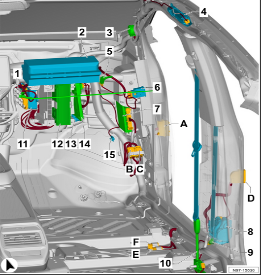

Preface
In 2021, while working at 360, I built a test bench for the VW ID.4. I was close to getting significant results—I had internal ODIS access and root privileges on ICAS3—but I was abruptly reassigned to build a demo vehicle during a business trip, which disrupted my follow-up plans. During that period, a combination of professional obligations and personal challenges forced me to pause the research.
You could call this a “regret project”—an unfinished endeavor I wish I had completed. By coincidence, I revisited the vehicle control logic of the ID.4’s ICAS1 this past May. Another such project is CAN-Pick NG, which I partially wrote before shelving. I am unsure if I will be able to finish it in 2025.
The ID.4 is based on Volkswagen’s MEB platform. Its EE (Electrical/Electronic) architecture features two primary domain controllers: ICAS1 and ICAS3. ICAS1 (J533) is responsible for body control.
The figure below shows the location of J533 at position 13. By mounting a drive-by-wire module here, you can monitor and control body functions.

In-Vehicle ECU Topology
- Classic CAN: 500 kbps
- CAN-FD: Arbitration phase 500 kbps, Data phase 2 Mbps. (For CAN-FD analysis, ZLG devices are highly recommended).
Analyzing the ELSA wiring diagrams and internal VW training materials revealed inconsistent bus naming. Reorganizing this information is necessary to derive the correct CAN topology.
The J533 gateway manages a total of 9 CAN buses and 4 LIN buses (LIN is not utilized in this analysis). The key ECUs are as follows:
- Running-Gear CAN (CAN-FD)
- J104 - ABS
- J500 - EPS (Electric Power Steering control unit)
- NX6 - Brake Controller (Brake Booster)
- Powertrain CAN (CAN-FD)
- J623 - Engine/Motor Control Module
- J841/J944 - Electric Drive Unit
- J234 - Airbag (Do not fuzz this; it is dangerous)
- Driver Assistance CAN (CAN-FAS) (CAN-FD)
- J428 - Distance Control Unit
- J446 - Parking Radar Control Unit
- J769/J770 - Lane Change Assist Control Units
- J928 - Surround-View Camera Control Unit
- Convenience CAN (Classic)
- J527 - Steering Column Electronics Control Module (Shift-by-wire module)
- J605 - Tailgate Control Unit
- J764 - Steering Column Lock
- …and other body controls
- CAN-EV (CAN-FD)
- J979 - Heater and Air Conditioning Control Module

J533 Connector T40a Definition
The following table details the T40a connector pinout.


Bus Security Strategy
Gateway Isolation
Multifunction steering wheel control signals originate on the Convenience CAN, but ECUs on the Chassis CAN can also observe them. However, the J533 gateway blocks any steering wheel control signals originating from the Chassis CAN, preventing them from reaching their target ECUs.
CRC Check
Observing the CAN bus traffic reveals a pattern in most messages: the first byte appears random, while the second byte increments regularly. The first byte is the CRC (Cyclic Redundancy Check), and the second byte is a counter.
CRC Seeds
Reference: OpenDBC github
/opendbc/can/common.cc volkswagen_mqb_checksum
While checksum seeds for the VW MQB platform are available, the ID.4 introduces many new CRC seeds. I reverse-engineered them and listed them below.
Most control signals include both a CRC and a counter. ECUs typically skip CRC validation for non-critical functions (e.g., sunroof, windows, horn) but enforce it for safety-critical functions such as EPS, tailgate operation, and wipers.
| Signal | CAN ID | CRC Seed |
|---|---|---|
| AAA_01 | 0x12DD5502 | 0x62,0x14,0x7c,0xa1,0x49,0x95,0x43,0x04,0x78,0x46,0x74,0x19,0x39,0x17,0x9f,0x1c |
| ACC_18 | 0x14D | 0x1a,0x65,0x81,0x96,0xc0,0xdf,0x11,0x92,0xd3,0x61,0xc6,0x95,0x8c,0x29,0x21,0xb5 |
| Airbag_01 | 0x040 | 0x40,0x40,0x40,0x40,0x40,0x40,0x40,0x40,0x40,0x40,0x40,0x40,0x40,0x40,0x40,0x40 |
| Airbag_02 | 0x520 | 0x44,0x44,0x44,0x44,0x44,0x44,0x44,0x44,0x44,0x44,0x44,0x44,0x44,0x44,0x44,0x44 |
| APS_Master | 0x380 | 0x13,0x13,0x13,0x13,0x13,0x13,0x13,0x13,0x13,0x13,0x13,0x13,0x13,0x13,0x13,0x13 |
| AWV_03 | 0x0DB | 0x09,0xfa,0xca,0x8e,0x62,0xd5,0xd1,0xf0,0x31,0xa0,0xaf,0xda,0x4d,0x1a,0x0a,0x97 |
| BEM_06 | 0x48B | 0x54,0xaf,0x8a,0xfb,0x0d,0x87,0x6a,0x0f,0x47,0x78,0x31,0x4f,0x35,0x28,0x82,0x6d |
| Blinkmodi_02 | 0x366 | 0xa9,0xbd,0xfb,0x3c,0x95,0x0f,0x75,0x3a,0x4f,0x19,0x59,0x6d,0xb2,0xe9,0xd1,0x97 |
| EA_01 | 0x1A4 | 0x69,0xbb,0x54,0xe6,0x4e,0x46,0x8d,0x7b,0xea,0x87,0xe9,0xb3,0x63,0xce,0xf8,0xbf |
| EA_02 | 0x1F0 | 0x2f,0x3c,0x22,0x60,0x18,0xeb,0x63,0x76,0xc5,0x91,0x0f,0x27,0x34,0x04,0x7f,0x02 |
| ELV_01 | 0x656 | 0xab,0x2f,0xd3,0x39,0x6f,0x37,0xfa,0x59,0xa4,0x70,0xce,0x11,0x54,0x82,0x62,0x56 |
| EM1_01 | 0x0C0 | 0x2f,0x44,0x72,0xd3,0x07,0xf2,0x39,0x09,0x8d,0x6f,0x57,0x20,0x37,0xf9,0x9b,0xfa |
| EML_02 | 0x1A555541 | 0x3e,0xb4,0x25,0xc1,0x31,0x1f,0xf1,0xd7,0xb1,0xbe,0xcc,0xe0,0x0f,0x46,0x51,0xb2 |
| EML_06 | 0x20A | 0x9d,0xe8,0x36,0xa1,0xca,0x3b,0x1d,0x33,0xe0,0xd5,0xbb,0x5f,0xae,0x3c,0x31,0x9f |
| ESC_50 | 0x102 | 0xd7,0x12,0x85,0x7e,0x0b,0x34,0xfa,0x16,0x7a,0x25,0x2d,0x8f,0x04,0x8e,0x5d,0x35 |
| ESC_51 | 0x0FC | 0x77,0x5c,0xa0,0x89,0x4b,0x7c,0xbb,0xd6,0x1f,0x6c,0x4f,0xf6,0x20,0x2b,0x43,0xdd |
| ESP_10 | 0x116 | 0xac,0xac,0xac,0xac,0xac,0xac,0xac,0xac,0xac,0xac,0xac,0xac,0xac,0xac,0xac,0xac |
| ESP_20 | 0x65D | 0xac,0xb3,0xab,0xeb,0x7a,0xe1,0x3b,0xf7,0x73,0xba,0x7c,0x9e,0x06,0x5f,0x02,0xd9 |
| ESP_21 | 0x0FD | 0xb4,0xef,0xf8,0x49,0x1e,0xe5,0xc2,0xc0,0x97,0x19,0x3c,0xc9,0xf1,0x98,0xd6,0x61 |
| ESP_24 | 0x31B | 0x67,0x8a,0xae,0x22,0x4d,0xd0,0x51,0x80,0x5c,0xb9,0xce,0x1e,0xdf,0x02,0x2d,0xd4 |
| Getriebe_11 | 0x0AD | 0x3f,0x69,0x39,0xdc,0x94,0xf9,0x14,0x64,0xd8,0x6a,0x34,0xce,0xa2,0x55,0xb5,0x2c |
| GRA_ACC_01 | 0x12B | 0x6a,0x38,0xb4,0x27,0x22,0xef,0xe1,0xbb,0xf8,0x80,0x84,0x49,0xc7,0x9e,0x1e,0x2b |
| HCA_01 | 0x126 | 0xda,0xda,0xda,0xda,0xda,0xda,0xda,0xda,0xda,0xda,0xda,0xda,0xda,0xda,0xda,0xda |
| HVL_01 | 0x12DD553D | 0x1d,0x82,0x7b,0x79,0xa5,0xee,0x3a,0xb9,0xb7,0xf9,0xe4,0x67,0x7f,0x97,0x11,0xad |
| IPA_01 | 0x138 | 0x77,0x4e,0x14,0x87,0xf2,0xf8,0xb2,0x61,0xf6,0xa4,0x52,0x94,0xd4,0x81,0x2a,0xb1 |
| IPA_02 | 0x16A9545F | 0xc6,0x7f,0x85,0xb6,0xe6,0xae,0xf8,0x26,0xb0,0x8c,0x19,0x10,0x5b,0x33,0x64,0x6c |
| Klemmen_Status_01 | 0x3C0 | 0xc3,0xc3,0xc3,0xc3,0xc3,0xc3,0xc3,0xc3,0xc3,0xc3,0xc3,0xc3,0xc3,0xc3,0xc3,0xc3 |
| LH_EPS_02 | 0x11D | 0x1c,0x1c,0x1c,0x1c,0x1c,0x1c,0x1c,0x1c,0x1c,0x1c,0x1c,0x1c,0x1c,0x1c,0x1c,0x1c |
| LH_EPS_03 | 0x09F | 0xf5,0xf5,0xf5,0xf5,0xf5,0xf5,0xf5,0xf5,0xf5,0xf5,0xf5,0xf5,0xf5,0xf5,0xf5,0xf5 |
| Licht_Anf_01 | 0x3D5 | 0xc5,0x39,0xc7,0xf9,0x92,0xd8,0x24,0xce,0xf1,0xb5,0x7a,0xc4,0xbc,0x60,0xe3,0xd1 |
| LWI_01 | 0x086 | 0x86,0x86,0x86,0x86,0x86,0x86,0x86,0x86,0x86,0x86,0x86,0x86,0x86,0x86,0x86,0x86 |
| Motor_14 | 0x3BE | 0x1f,0x28,0xc6,0x85,0xe6,0xf8,0xb0,0x19,0x5b,0x64,0x35,0x21,0xe4,0xf7,0x9c,0x24 |
| Motor_51 | 0x10B | 0x77,0x5c,0xa0,0x89,0x4b,0x7c,0xbb,0xd6,0x1f,0x6c,0x4f,0xf6,0x20,0x2b,0x43,0xdd |
| Motor_54 | 0x14C | 0x16,0x35,0x59,0x15,0x9a,0x2a,0x97,0xb8,0x0e,0x4e,0x30,0xcc,0xb3,0x07,0x01,0xad |
| Motor_Code_01 | 0x641 | 0x47,0x47,0x47,0x47,0x47,0x47,0x47,0x47,0x47,0x47,0x47,0x47,0x47,0x47,0x47,0x47 |
| Parken_01 | 0x206 | 0x09,0xfa,0xca,0x8e,0x62,0xd5,0xd1,0xf0,0x31,0xa0,0xaf,0xda,0x4d,0x1a,0x0a,0x97 |
| PLA_04 | 0x407 | 0xef,0x60,0x04,0xa8,0x0c,0x1c,0xda,0x07,0x36,0xd7,0x28,0x92,0xa9,0x88,0x2c,0x4a |
| QFK_01 | 0x13D | 0x20,0xca,0x68,0xd5,0x1b,0x31,0xe2,0xda,0x08,0x0a,0xd4,0xde,0x9c,0xe4,0x35,0x5b |
| RCTA_01 | 0x2B7 | 0x5e,0xc7,0x04,0x11,0x4d,0x27,0x0d,0x31,0x91,0xb8,0x62,0x76,0x64,0x09,0xeb,0xec |
| SAL_01 | 0x12DD54C9 | 0xde,0xa9,0x83,0x0b,0x0c,0x64,0x79,0x44,0x0f,0xf6,0xc6,0xc7,0x05,0x45,0xb7,0x59 |
| SAM_01 | 0x205 | 0x19,0x36,0xd4,0x1e,0x80,0x22,0xf4,0xb8,0xad,0x41,0x0b,0x3f,0x87,0x42,0x25,0x40 |
| SMLS_01 | 0x3D4 | 0xc3,0x79,0xbf,0xdb,0xe9,0x11,0x46,0x86,0x69,0xb6,0x9b,0x29,0x15,0x9c,0x45,0x0d |
| TA_01 | 0x26B | 0xce,0xcc,0xbd,0x69,0xa1,0x3c,0x18,0x76,0x0f,0x04,0xf2,0x3a,0x93,0x24,0x19,0x51 |
| TSG_FT_02 | 0x3E5 | 0xc4,0x6a,0x69,0x30,0xcf,0x61,0x58,0x51,0x1b,0x86,0x99,0xd3,0xf6,0x1d,0x9a,0x37 |
| VMM_01 | 0x105 | 0xde,0x0e,0xa7,0x1d,0xc3,0x83,0xbd,0x82,0x8c,0xa2,0x0c,0x7b,0x4d,0x3c,0x58,0x79 |
| VMM_02 | 0x139 | 0xed,0x03,0x1c,0x13,0xc6,0x23,0x78,0x7a,0x8b,0x40,0x14,0x51,0xbf,0x68,0x32,0xba |
CRC Algorithm
MEB_Kennungsfolge = {
# LWI_01 Steering Angle
0x86: [0x86, 0x86, 0x86, 0x86, 0x86, 0x86, 0x86, 0x86, 0x86, 0x86, 0x86, 0x86, 0x86, 0x86, 0x86, 0x86],
# LH_EPS_03 Electric Power Steering
0x9F: [0xF5, 0xF5, 0xF5, 0xF5, 0xF5, 0xF5, 0xF5, 0xF5, 0xF5, 0xF5, 0xF5, 0xF5, 0xF5, 0xF5, 0xF5, 0xF5],
# HCA_01 Heading Control Assist
0x126: [0xDA, 0xDA, 0xDA, 0xDA, 0xDA, 0xDA, 0xDA, 0xDA, 0xDA, 0xDA, 0xDA, 0xDA, 0xDA, 0xDA, 0xDA, 0xDA],
# GRA_ACC_01 Steering wheel controls for ACC
0x12B: [0x6A, 0x38, 0xB4, 0x27, 0x22, 0xEF, 0xE1, 0xBB, 0xF8, 0x80, 0x84, 0x49, 0xC7, 0x9E, 0x1E, 0x2B]
}
def gen_crc_lookup_table_8(poly):
crc_lut = [0] * 256
for i in range(256):
crc = i
for j in range(8):
if crc & 0x80:
crc = (crc << 1) ^ poly
else:
crc <<= 1
crc_lut[i] = crc & 0xFF
return crc_lut
def volkswagen_mqb_checksum(address, data):
global crc8_lut_8h2f
crc = 0xFF # CRC8 8H2F/AUTOSAR
for i in range(1, len(data)):
crc = crc ^ data[i]
# print(hex(crc), hex(i))
crc = crc8_lut_8h2f[crc]
counter = data[1] & 0x0F
if address in MEB_Kennungsfolge:
crc ^= MEB_Kennungsfolge[address][counter]
else:
# No validation required
crc ^= [0x00] * 16 # Return all 0s by default
crc = crc8_lut_8h2f[crc] # Standard CRC8 8H2F/AUTOSAR final XOR
return crc ^ 0xFF
can_id = 0x126
data = bytearray(bytes(8))
crc8_lut_8h2f = gen_crc_lookup_table_8(0x2f)
crc = volkswagen_mqb_checksum(can_id, data)
data[0] = crc
CAN Signals
The Convenience CAN carries the signal traffic listed below. It allows for state monitoring and control of most body functions, including HVAC, front/rear lights, horn, wipers, windows, door locks, and various vehicle status updates.
0x12B GRA_ACC_01 Adaptive Cruise Control (GRA/ACC)
0x1F0 EA_02 Emergency Assist
0x205 SAM_01 Switches and Execution Module
0x2B7 RCTA_01 Rear Cross Traffic Alert
0x31B ESP_24
0x366 Blinkmodi_02 Blinking Mode (Turn Signals)
0x397 LDW_02 Lane Departure Warning System
0x3BE Motor_14 Motor Control
0x3C0 Klemmen_Status_01 Terminal Status (Clamp Status)
0x3CE TSG_HFS_01 Rear Door Window Function System (Left?)
0x3CF TSG_HBFS_01 Rear Door Window Function System (Right?)
0x3D0 TSG_FT_01 Front Door Function System
0x3D4 SMLS_01 Steering Column Switch Module
0x3D5 Licht_Anf_01 Light Request
0x3D6 Licht_hinten_01 Rear Light Status
0x3DC Gateway_73 Gateway Info (System alerts, safety warnings, fault diagnosis, signal updates)
0x48B BEM_06 Low Voltage Energy Management
0x520 Airbag_02 Airbag 2
0x551 WFS_01 Immobilizer
0x582 HDSG_01 Trunk Management Status
0x583 ZV_02 Central Locking System
0x585 Systeminfo_01 Diagnostic and Production Mode Settings
0x592 Kessy_04 Smart Key System (Kessy) / Remote Parking Status/Control
0x5A0 RLS_01 Light and Rain Sensor
0x5A7 TM_01 Telematics
0x5F0 Dimmung_01 Dimming
0x5F4 Innenlicht_11 Interior Lighting
0x641 Motor_Code_01 Motor Coding
0x643 Einheiten_01 Unit Settings
0x656 ELV_01 Electronic Steering Column Lock
0x658 Licht_vorne_01 Front Light Status
0x65D ESP_20
0x668 Klima_12 Air Conditioning System
0x670 Motor_18
0x6AE Spiegel_01 Mirrors
0x6AF Rear_View_01 Rear View Camera
0x6B2 Diagnose_01
0x6B4 VIN_01
0x12DD54C9 SAL_01 Lighting Module
Other Signals
While the DBC has been analyzed, it is not currently published.
0x184
1. Lock Vehicle
1. Byte 2: Mirror Open (0x20 Open)
2. Byte 3: Mirror Close (0x40 Close)
2. Windows
1. Byte 6: Window Control - 04 Front Left Down, 02 Front Left Up, 40 Rear Left Down, 08 Front Right Up, 10 Front Right Down
2. Byte 7: 01 Rear Right Down
0x185
1. Window Control (10, 20 Up; 40, 80 Down)
1. Byte 1: Front Row
2. Byte 2: Rear Row
0x598
1. Sunroof Control
1. Byte 3: 0x20 None, 0x21 Tap, 0x22 Slide, 0x25 Long Press
2. Byte 7: 04 Close Once, 08 Close Cont., 0C Open Once, 10 Open Cont., 14/1C Others
Steering Control
The vehicle must be in Gear D/B or R. The following five signals can be used to control the steering wheel:
- LWI_01: Steering Angle Sensor
- LH_EPS_03: Electric Power Steering (Steering Assist)
- HCA_01: Heading Control Assist
- GRA_ACC_01: Adaptive Cruise Control
- PLA_05: Park Lane Assist
Notes:
- Combining signals 0x86, 0x9f, 0x126, 0x12b, and 0x302 on the CAN-FAS bus allows for parking steering actuation.
- Combining signals 0x86, 0x9f, and 0x302 on the Gear-Running CAN can also actuate the steering wheel.
- Both 0x9f (LH_EPS_03) and 0x302 (PLA_05) can directly control the steering wheel.
- Since 0x302 (PLA_05) lacks a CRC check, it offers a simpler method for steering control compared to 0x9f.
DEMO
def create_pla_control(sendestatus, positive, degree):
data = bytearray(bytes(24))
data[1] = 0x40
# PLA_QFK_Spuerb
data[2] = 0xFA
# PLA_QFK_KruemmSoll
data = set_value(data, degree, 32, 15)
# PLA_QFK_KruemmSoll_VZ
if positive:
data = set_value(data, 1, 47, 1)
else:
data = set_value(data, 0, 47, 1)
# PLA_05_Sendestatus
if sendestatus:
data = set_value(data, 1, 74, 1)
else:
data = set_value(data, 0, 74, 1)
return data
hca_01_counter = 0
degree = 0
for i in range(20):
# data = create_steering_control(10 * i, 1)
# meb_can_send(0x126, 0.1, data)
degree += 0x10
data = create_pla_control(1, 1, degree)
can_send(0x302, 0.1, data)
RPi CAN HAT
This steering control demo only makes the steering wheel move. To implement true remote driving, you need a solid understanding of vehicle dynamics and must design a proper control algorithm.
import os
import can
import time
can0 = can.interface.Bus(channel = 'can0', bustype = 'socketcan', fd=True, bitrate=500000)
# msg = can.Message(is_extended_id=False, arbitration_id=0x123, data=[0, 1, 2, 3, 4, 5, 6, 7])
# can0.send(msg)
MEB_Kennungsfolge = {
# LWI_01 Steering Angle
0x86: [0x86, 0x86, 0x86, 0x86, 0x86, 0x86, 0x86, 0x86, 0x86, 0x86, 0x86, 0x86, 0x86, 0x86, 0x86, 0x86],
# LH_EPS_03 Electric Power Steering
0x9F: [0xF5, 0xF5, 0xF5, 0xF5, 0xF5, 0xF5, 0xF5, 0xF5, 0xF5, 0xF5, 0xF5, 0xF5, 0xF5, 0xF5, 0xF5, 0xF5],
# HCA_01 Heading Control Assist
0x126: [0xDA, 0xDA, 0xDA, 0xDA, 0xDA, 0xDA, 0xDA, 0xDA, 0xDA, 0xDA, 0xDA, 0xDA, 0xDA, 0xDA, 0xDA, 0xDA],
# GRA_ACC_01 Steering wheel controls for ACC
0x12B: [0x6A, 0x38, 0xB4, 0x27, 0x22, 0xEF, 0xE1, 0xBB, 0xF8, 0x80, 0x84, 0x49, 0xC7, 0x9E, 0x1E, 0x2B]
}
def volkswagen_mqb_checksum(address, data):
global crc8_lut_8h2f
crc = 0xFF # CRC8 8H2F/AUTOSAR
for i in range(1, len(data)):
crc = crc ^ data[i]
# print(hex(crc), hex(i))
crc = crc8_lut_8h2f[crc]
counter = data[1] & 0x0F
if address in MEB_Kennungsfolge:
crc ^= MEB_Kennungsfolge[address][counter]
else:
print("Attempt to CRC check undefined Volkswagen message 0x%02X" % address)
crc ^= [0x00] * 16 # Return all 0s by default
crc = crc8_lut_8h2f[crc] # Standard CRC8 8H2F/AUTOSAR final XOR
return crc ^ 0xFF
def gen_crc_lookup_table_8(poly):
crc_lut = [0] * 256
for i in range(256):
crc = i
for j in range(8):
if crc & 0x80:
crc = (crc << 1) ^ poly
else:
crc <<= 1
crc_lut[i] = crc & 0xFF
return crc_lut
def meb_can_send(can_id, interval, data):
global hca_01_counter
data[1] = data[1] | hca_01_counter
crc = volkswagen_mqb_checksum(can_id, data)
data[0] = crc
hca_01_counter += 1
for j in data:
print(hex(j), end=", ")
time.sleep(interval)
msg = can.Message(is_extended_id=False, arbitration_id=can_id, data=data, is_fd=True)
can0.send(msg)
def can_send(can_id, interval, data):
time.sleep(interval)
msg = can.Message(is_extended_id=False, arbitration_id=can_id, data=data, is_fd=True)
can0.send(msg)
crc8_lut_8h2f = gen_crc_lookup_table_8(0x2f)
def set_value(data, value, start_pos, value_length):
end_pos = start_pos + value_length
for bit_index in range(start_pos, end_pos):
byte_index = bit_index // 8
bit_offset = bit_index % 8
bit_value = (value >> (bit_index - start_pos)) & 1
# print("\n")
# print("index", bit_index, start_pos, end_pos, "byte_index:", byte_index, "bit_offset:", bit_offset, "v:", bit_value)
if bit_value:
data[byte_index] |= 1 << bit_offset
else:
data[byte_index] &= ~(1 << bit_offset)
# for i in data:
# print(bin(i), end=",")
return data
def set_bit(b, bit, bit_index):
if bit_index < 0 or bit_index > 7:
raise ValueError("bit_index must be between 0 and 7")
mask = 1 << bit_index
flipped_byte = b ^ mask
return flipped_byte
def create_steering_control(apply_steer, lkas_enabled):
data = bytearray(bytes(8))
if lkas_enabled:
# HCA_01_Sendestatus
data = set_value(data, 5, 30, 1)
# HCA_01_Status_HCA
data = set_value(data, 1, 32, 4)
else:
# HCA_01_Sendestatus
data = set_value(data, 3, 30, 1)
# HCA_01_Status_HCA
data = set_value(data, 0, 32, 4)
# HCA_01_LM_Offset
print("create_steering_control", apply_steer)
data = set_value(data, abs(apply_steer), 16, 9)
# HCA_01_LM_OffSign
v = 1 if apply_steer < 0 else 0
data = set_value(data, v, 31, 1)
# HCA_01_Vib_Freq
data = set_value(data, 3, 12, 4)
# HCA_01_Vib_Amp
data = set_value(data, 10, 36, 4)
return data
def create_pla_control(sendestatus, positive, degree):
data = bytearray(bytes(24))
data[1] = 0x40
# PLA_QFK_Spuerb
data[2] = 0xFA
# PLA_QFK_KruemmSoll
data = set_value(data, degree, 32, 15)
# PLA_QFK_KruemmSoll_VZ
if positive:
data = set_value(data, 1, 47, 1)
else:
data = set_value(data, 0, 47, 1)
# PLA_05_Sendestatus
if sendestatus:
data = set_value(data, 1, 74, 1)
else:
data = set_value(data, 0, 74, 1)
return data
hca_01_counter = 0
degree = 0
for i in range(20):
# data = create_steering_control(10 * i, 1)
# meb_can_send(0x126, 0.1, data)
degree += 0x10
data = create_pla_control(1, 1, degree)
can_send(0x302, 0.1, data)
Notes
- Ensure the CAN bus enters sleep mode before leaving the vehicle; otherwise, it may drain the battery considerably.
- Do not fuzz the Powertrain and Running Gear CAN buses. This poses a direct risk of physical injury and may trigger abnormal ECU behavior or introduce hidden hazards (e.g., turn signal failure, mirrors not unfolding).
 CC BY-NC-SA 4.0
CC BY-NC-SA 4.0